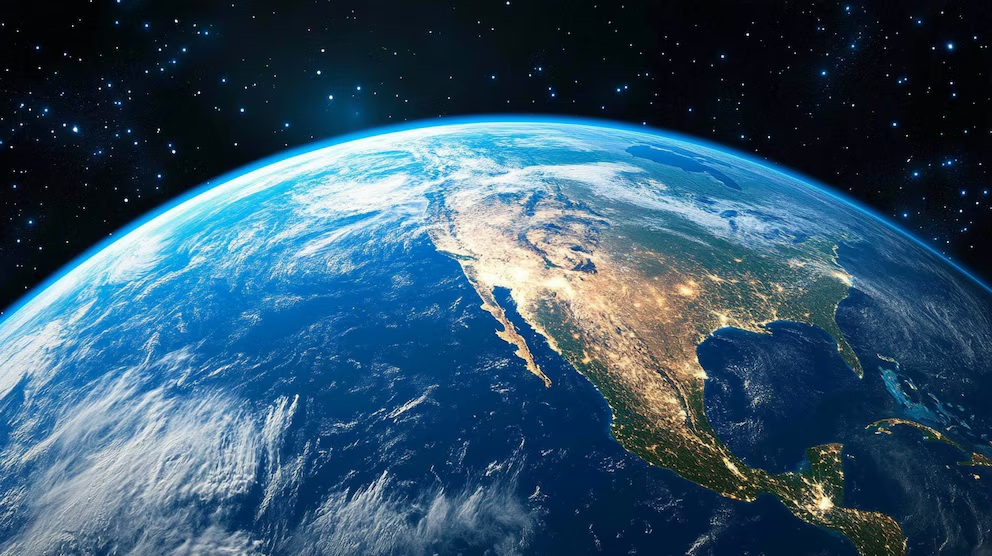
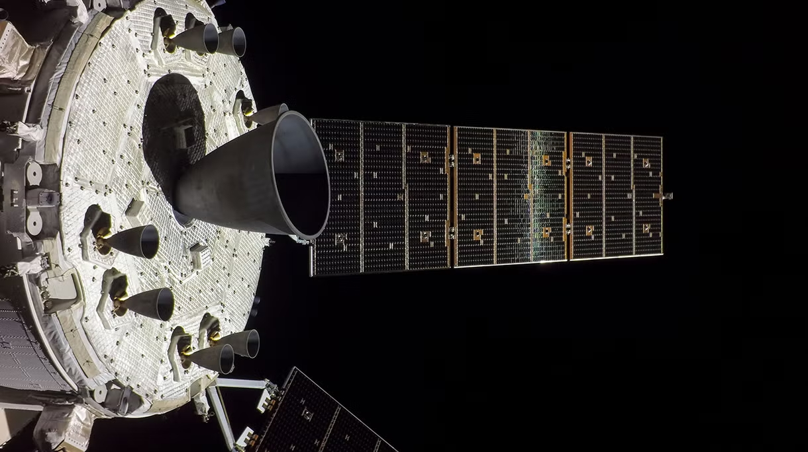
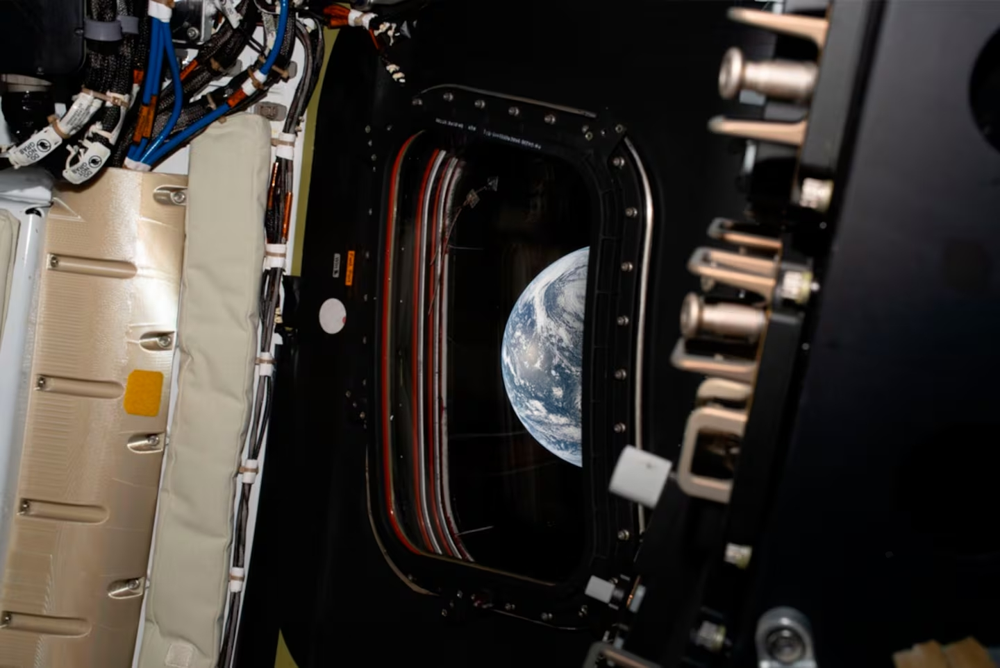

El estudio del Artemis ii


La expedición integra avances científicos, técnicos y sociales que están redefiniendo los límites de la presencia humana en el espacio.
Con una tripulación de cuatro astronautas —Reid Wiseman, Victor Glover, Christina Koch y Jeremy Hansen— la expedición no solo superó hasta ahora marcas de distancia y velocidad, sino que también integra avances científicos, técnicos y sociales que están redefiniendo los límites de la presencia humana en el espacio.
La NASA estructuró la misión con pruebas críticas en la cápsula Orión antes de abandonar la cercanía de nuestro planeta. Desde el inicio, la nave alcanzó una órbita terrestre de casi 70.400 kilómetros de altura, una cifra inédita para vuelos tripulados. Poco después, la tripulación ejecutó la maniobra de inyección translunar, iniciando el trayecto hacia la Luna.
Article
La afirmación del tripulante norteamericano del histórico sobrevuelo lunar refleja la filosofía del programa lunar de la NASA: cada vuelo debe aportar información crítica para construir futuras misiones sostenibles en el satélite natural.
Web
Article
Conozca a los astronautas que se aventuraron alrededor de la Luna en Artemis II, el primer vuelo tripulado a bordo de las capacidades humanas de exploración del espacio profundo de la NASA, allanando el camino para futuras misiones a la superficie lunar.
Web
Article
Las capturas muestran escenas del recorrido de Orion a nuestro satélite. La agencia confirmó la publicación de más contenido en los próximos días, que se incorporará a su web multimedia oficial.
Web